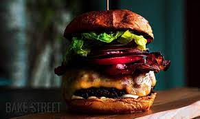

A mi történetünk
A Yamete és Tott Linda nagy álma volt, szeretett volna egy helyet, ahol megmutathatja és megoszthatja kedvenc sütijeit a világgal
Pockolás iránti szeretete minden ételünkön meglátszik. Jó minőségű alapanyagokból, gondosan elkészítve neked is akkora örömet fognak okozni,
mint amekkorát nekünk okozott elkészítésük!
Vissza
Recept
